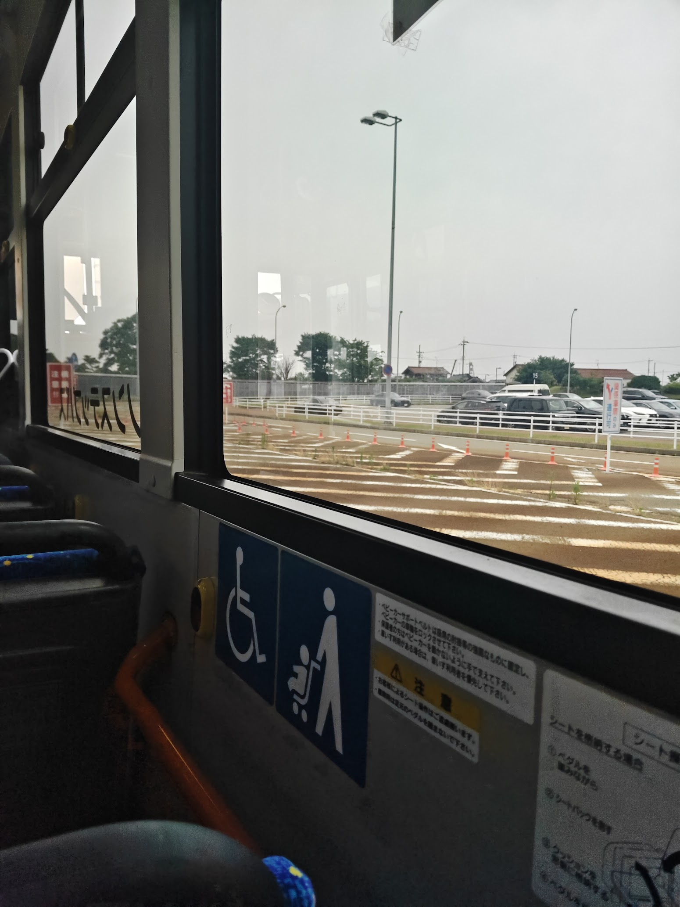
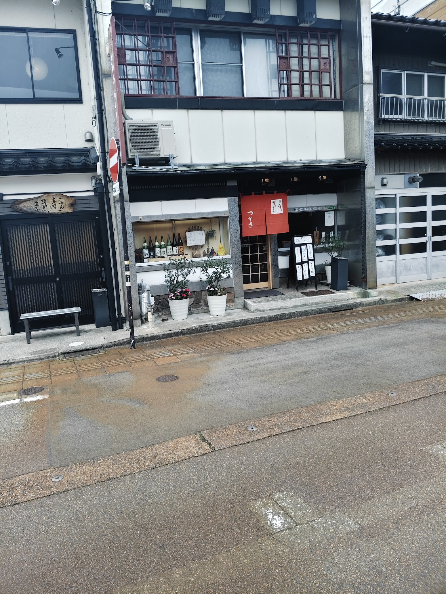
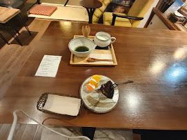
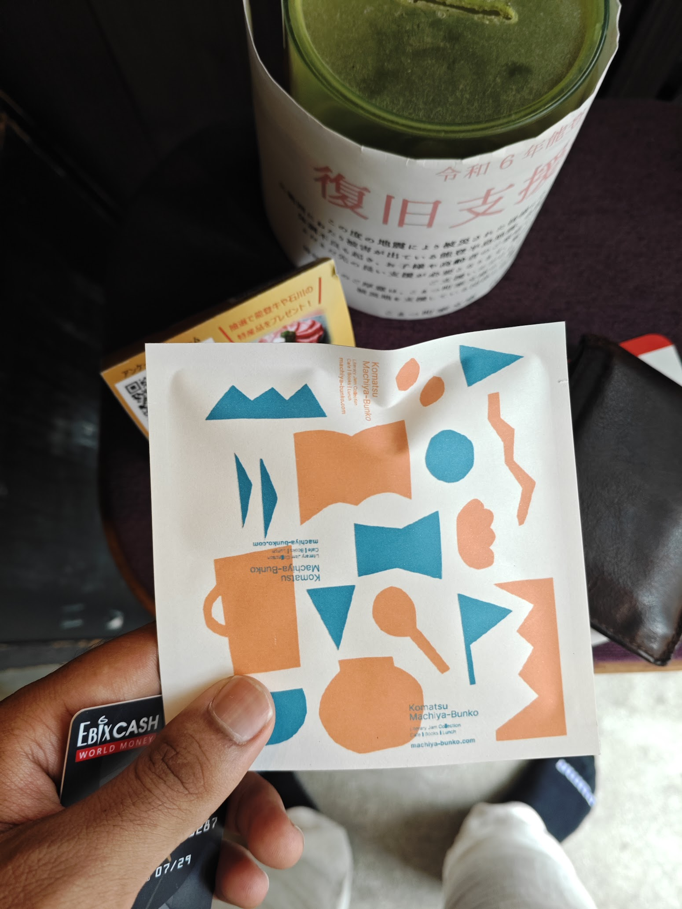

episode 1
landing in komatsu
disclaimer: i am very forgetful hence i might have missed a lot of details and events.
i landed in tokyo on 1st july 2026. my destination was komatsu but i had bought a connecting flight through fukuoka.

when i arrived at komatsu station, i had a few hours until the next jaist shuttle bus. i decided to walk around and get the feel of the city i would spend my next month in.

to alleviate the stress of a new place i decided to get inside a cafe to have something. after consulting google maps i went inside a local cafe. communication was a bit difficult.


in hindsight, i should have been less awkward. they gave me a gift. they were very kind.